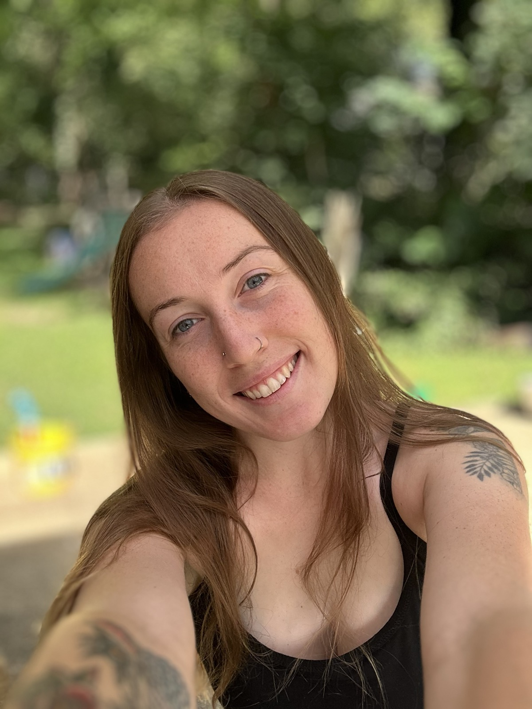

Megan Quintanilla · Birth Doula
Hi, I’m Megan!
Your Chattanooga birth doula.

My story
I’m not a doula because I read about birth in a book. I’m a doula because I’ve lived it three very different ways. I know firsthand what it feels like to have the wrong support during labor, and what it feels like to have the right support.
My first birth was traumatic. It happened in the hospital, and my baby ended up in the NICU. I didn’t have the labor and postpartum support I needed, and I felt every bit of that absence.
My second birth was the opposite in almost every way. It was fast, so fast that my midwives didn’t even make it in time, and I ended up having an accidental freebirth at home. It was intense, but it was also incredible, and it deepened my faith in a way nothing else has. That birth showed me what my body, and God’s design, was actually capable of when fear wasn’t running the show.
In the days after, I couldn’t stop thinking about it. I prayed a lot about what I’d just experienced, and by the end of it, I knew: God was calling me to be a birth doula. I wanted other mamas to feel what I felt.
My third baby was breech, and I had her at home too, no complications, just steady, calm support the whole way through labor and postpartum. Birth doesn’t have to be something that happens to you. With the right support, it can be something you go through, held, prepared, and at peace.
Why I became a doula
Those three births are why Your Birth Girl exists. I know what it’s like to walk away from a birth carrying trauma. I also know what it’s like to walk away feeling strong, trusted, and completely supported, and to feel called toward something because of it. I became a birth doula so more mamas in Chattanooga get the second version.
I believe God designed women’s bodies for birth. Whether your journey looks like laboring at home or walking into the hospital with a plan and a doula who won’t leave your side, you deserve someone who believes in your birth as much as you do.